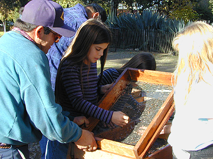

Many of the more than one-hundred school children, teachers, and
volunteers who attended the December 3rd, 1999 Old Mission Open House had
the opportunity to work the screens and dig within an excavation unit on
the site. In addition, Dr. Mendoza and his students provided orientations
to the art and science of archaeology and mission history.